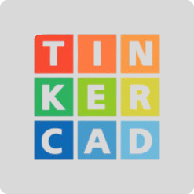
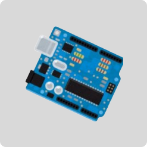

OBJETIVOS

Montar um protótipo do sensor de gases por meio da plataforma tinkercad


Escrever um artigo abordando todo o referencial teórico e processo de desenvolvimento do projeto
Desenvolver um site informativo para divulgação do projeto elaborado
Desenvolver uma aplicação móvel para monitorar os dados de concentração de gás em cada ambiente